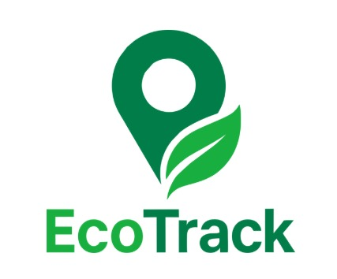

EcoTrack
EcoTrack se diseño como una herramienta digital para empresas dedicadas al reciclaje organizado, automatizando y unificando distintas funciones como generar rutas, reportes, certificados, entre otros. Ecotrack es un proyecto dedicado a funcionar como un facilitador de herramientas útiles y analíticas para cumplir con las normativas nacionales de reciclaje.